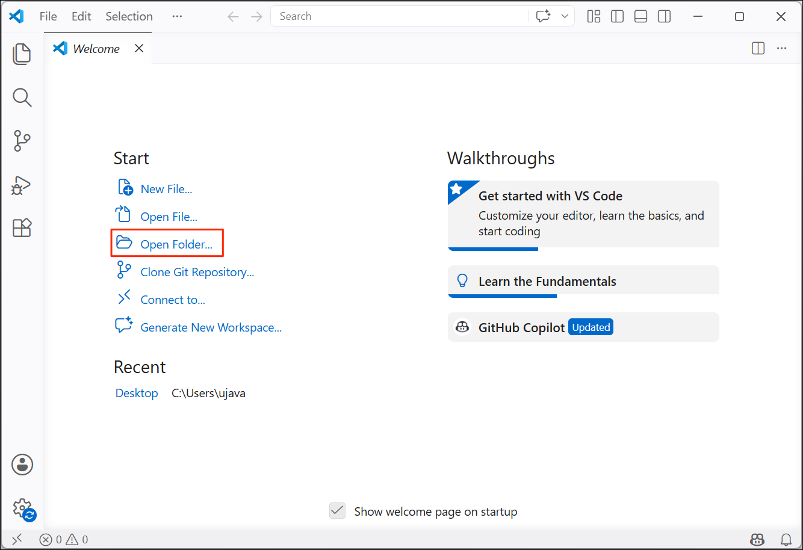
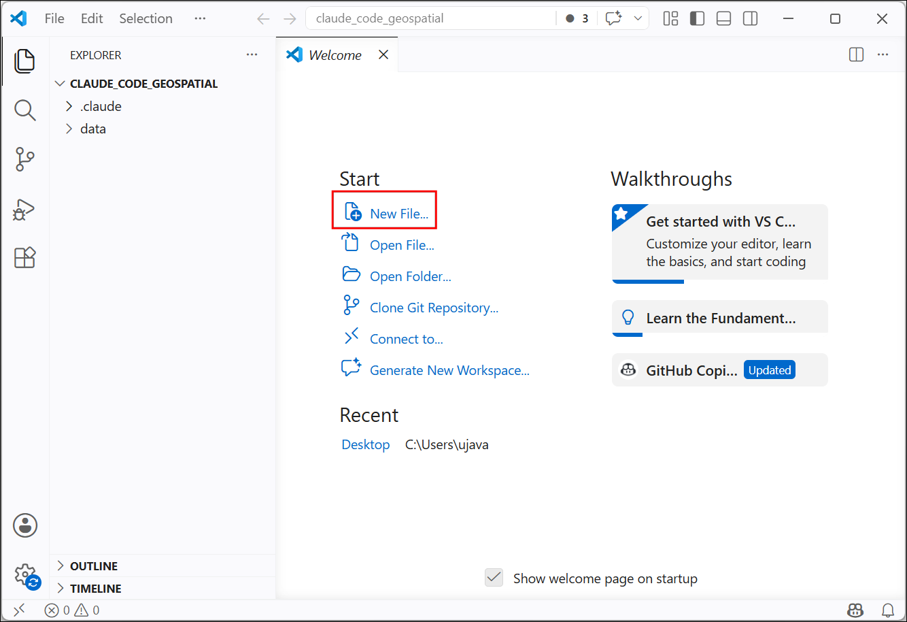
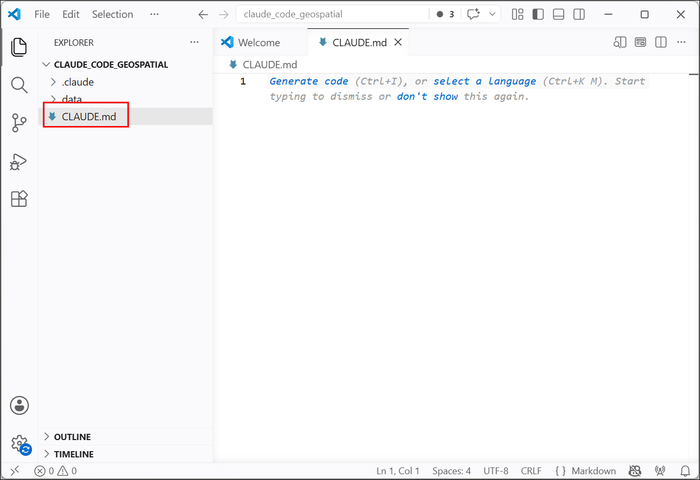
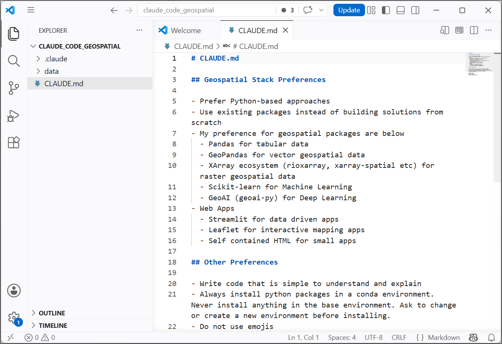
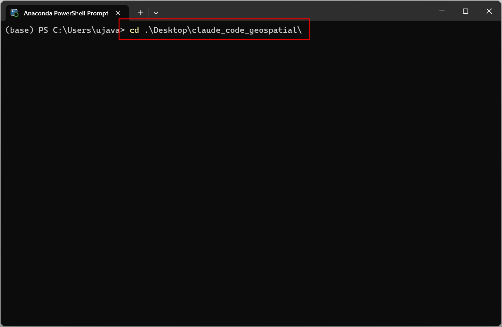
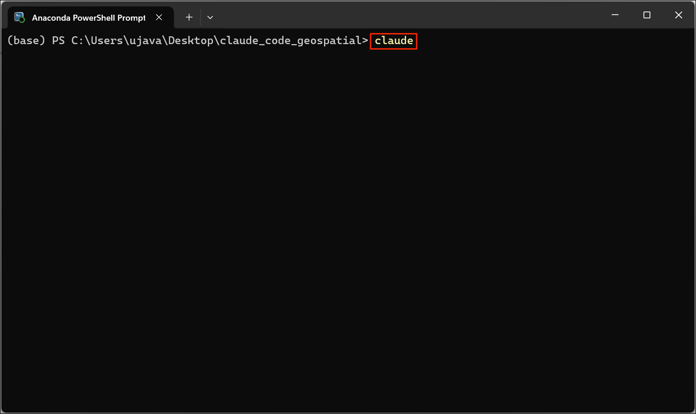
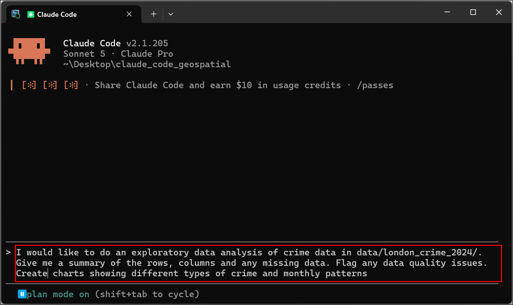
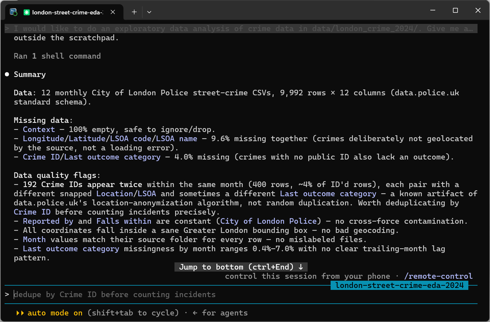
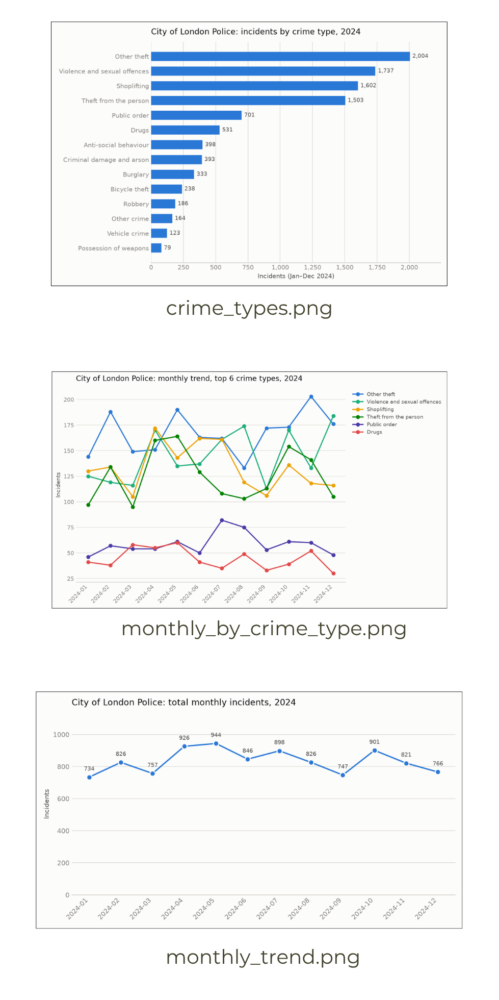

Claude Code for Geospatial (Full Workshop)
Learn how to use Claude Code for geospatial data science workflows.
Ujaval Gandhi

This workshop is under development and not yet ready.
Introduction
This workshop covers agentic coding workflows with Claude – specializing in geospatial data science workflows.
Installation and Preparation
Sign-up for GitHub
Visit GitHub.com and create a free account. If you already have an account, skip this step.
Install Git and GitHub CLI
Follow our Git and GitHub CLI Installation Guide install and configure Git and GitHub CLI.
Install Conda and Setup an Environment
We will use conda to install the required Python packages and manage local development environment.
Follow our step-by-step Conda Installation Guide to install Miniconda for your operating system.
- (Windows users), search for Anaconda Powershell Prompt and launch it. (Mac/Linux users): Launch a Terminal window. Run the following commands to create a fresh environment and activate it.
- Now your environment is ready. We will install the required packages
from
conda-forge.
Your local development environment is now ready.
Install Visual Studio Code
We recommend Visual Studio Code (VS Code) editor for this workshop.
Follow our step-by-step Visual Studio Code Installation Guide to install and configure VS Code on your system.
Install Claude Code
Follow our step-by-step Claude Code Installation Guide to install and configure Claude Code on your system.
Get the Data Package
The code examples and reference materials used in this workshop are
supplied to you in the claude_code_geospatial.zip file.
Unzip this file to a directory - preferably to the
<home folder>/Desktop/claude_code_geospatial/
folder.
Download claude_code_geospatial.zip.
Note: Certification and Support are only available for participants in our paid instructor-led classes.
1. Initiaze Your Project
A good practice is to always setup a CLAUDE.md file for
your project. This file contains instructions and rules to be followed
when working inside the project directory. If you already have a
directory with some code or have cloned a Git repository, Claude Code
can automatically create the CLAUDE.md file using the
/init command. Here we are starting with a blank project,
so we will create a new CLAUDE.md file with
instructions.
- On your computer, launch Visual Studio Code. Click Open
Folder… and select the
<home folder>/Desktop/claude_code_geospatial/where you have unzipped the data package.

- We will create a new file at the root of this folder. Select New File….

- Enter the name of the file exactly as
CLAUDE.md. Note that the filename is case sensitive and needs to have the.mdextension.

- Paste the following content and save the file.
# CLAUDE.md
## Geospatial Stack Preferences
- Prefer Python-based approaches
- Use existing packages instead of building solutions from scratch
- My preference for geospatial packages are below
- Pandas for tabular data
- GeoPandas for vector geospatial data
- XArray ecosystem (rioxarray, xarray-spatial etc) for raster geospatial data
- Scikit-learn for Machine Learning
- GeoAI (geoai-py) for Deep Learning
- Web Apps
- Streamlit for data driven apps
- Leaflet for interactive mapping apps
- Self contained HTML for small apps
## Other Preferences
- Write code that is simple to understand and explain
- Always install python packages in a conda environment. Never install anything in the base environment. Ask to change or create a new environment before installing.
- Do not use emojis
- Now we will start Claude Code. (Windows users), search for
Anaconda Powershell Prompt and launch it. (Mac/Linux users):
Launch a Terminal window. Use the
cdcommand to change the current working directory to the project directory.
Windows
Mac/Linux

- Once you are inside the project folder, launch Claude Code by entering the following command.

- The first time you start Claude Code inside a directory, there will
be a security notification. You can choose Yes, I trust this
folder. At the prompt, you can invoke several commands for
configuration. You can type
/helpto see all available commands. Let’s run a few commands. First enable Plan Mode by entering the/plancommand. Next choose the model using the/modelcommand. The default model choice is good for now, and you can change the model at any time.

Now we are ready to use Claude Code for our first data analysis task.
2. Geospatial Data Analysis
2.1 Exploratory Data Analysis (Mapping Crime Hotspots)
We will now use Claude Code to do some data exploration, cleaning and analysis. This will give you a feel of how agents work and how to guide them. We will take the Police.uk data on street-level crime for the City of London Police and identify crime hotspots.
- Enter the following prompt into Claude Code and press Enter. Make sure the Plan mode is on. This will ensure Claude Code will first make an implementation plan and wait for your approval before diving into coding.
I would like to do an exploratory data analysis of crime data in the folder london_crime_2024.
* Give me a summary of the rows, columns and any missing data.
* Flag any data quality issues.
* Create charts showing different types of crime and monthly patterns.
- As the project-level
CLAUSE.mdstates, all the work needs to be done in a conda virtual envrionment. Claude will prompt you to choose an environment. Choose the claude_code_workshop environment created for this class and press Enter.

- For the Output format, choose Python script + saved PNGs.

- Review the answers and select Submit answers. Press Enter.
Depending on your operating system, Claude Code version, and selected model, you may see a slightly different set of questions.

- Now Claude Code will go through the data and come up with a plan for building the required script for exploratory data analysis. You can review the plan and edit it as per your requirements. Use the Ctrl+G shortcut to open an editor with the plan and make any necessary edits. Once you are satisfied, confirm the execution by selecting Yes, and use auto mode.

- Claude Code will write the Python scripts and run it using the installed packages in the conda environment.

- Once done, it will prints the summary of its findings.

- The analysis will also produce some charts in the
output/subfolder.

2.2 Using Web APIs (Route Optimization)
3. Using Skills
3.1 Building a Personal Knowledge Website
4. Using MCP Servers
4.2 Using Google Colab (Object Detection)
License
This workshop material is licensed under a Creative Commons Attribution 4.0 International (CC BY 4.0). You are free to re-use and adapt the material but are required to give appropriate credit to the original author as below:
Claude Code for Geospatial by Ujaval Gandhi www.spatialthoughts.com
© 2026 Spatial Thoughts www.spatialthoughts.com
If you want to report any issues with this page, please comment below.